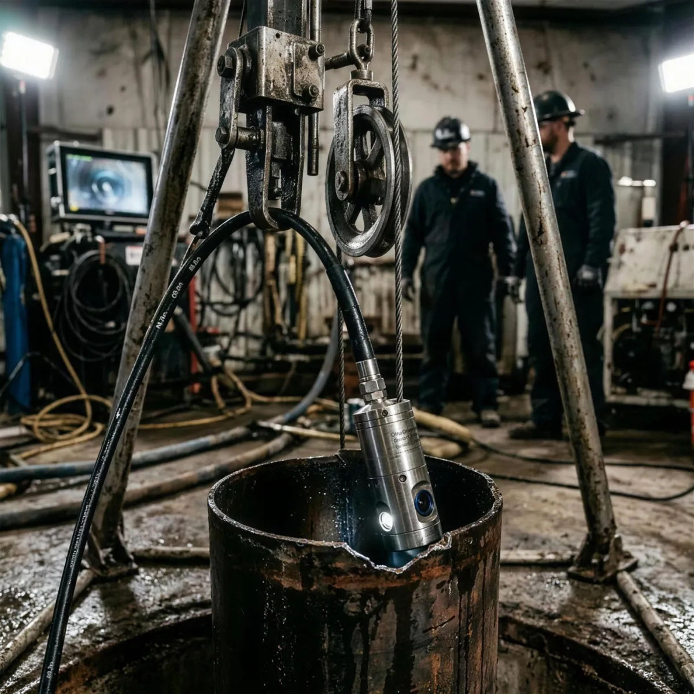

Video-inspección CCTV
Cámara de pozo con visión axial y radial 360° que recorre toda la columna y registra en video el estado del entubado, los filtros y el fondo, con referencia de profundidad metro a metro.

Diagnosticamos el estado real de su pozo con video-inspección CCTV, diagrafías y pruebas de bombeo — y perforamos pozos nuevos desde el estudio hidrogeológico hasta la puesta en marcha. Más de 15 años protegiendo el recurso hídrico de la agroindustria, la minería y los gobiernos locales.

DISOPA es una empresa peruana especializada en el ciclo completo del pozo de agua subterránea: desde el estudio hidrogeológico y la perforación, hasta la inspección técnica, la evaluación del acuífero y la rehabilitación de pozos con caudal deficiente.
Nuestro trabajo se apoya en dos frentes complementarios. La inspección —nuestra especialidad— revela con evidencia audiovisual y datos medidos qué está ocurriendo dentro de un pozo que usted no puede ver. La perforación aplica esa misma disciplina técnica cuando la solución es un pozo nuevo, correctamente diseñado desde el primer metro.
“Un pozo no falla de un día para otro. Falla en silencio durante meses: incrustación en los filtros, arenamiento, corrosión, descenso del nivel dinámico. La inspección es lo que convierte ese silencio en información accionable.”
La inspección es el núcleo de lo que hacemos: es donde la medición precisa evita una inversión equivocada. La perforación cierra el ciclo cuando el diagnóstico indica que hace falta un pozo nuevo.
Cámara de pozo con visión axial y radial 360° que recorre toda la columna y registra en video el estado del entubado, los filtros y el fondo, con referencia de profundidad metro a metro.
Identificación de incrustación calcárea y ferrobacteriana, corrosión, colapso de tubería, rotura de filtros, arenamiento e ingreso de finos. Cada hallazgo se ubica en profundidad y se clasifica por severidad.
Perfilaje geofísico del pozo: gamma natural, resistividad, potencial espontáneo, calibre y verticalidad. Define el perfil litológico real y la posición óptima de los filtros.
Ensayos a caudal escalonado y a caudal constante con medición de nivel estático y dinámico. Se obtienen caudal específico, abatimiento, eficiencia del pozo y parámetros del acuífero (transmisividad y coeficiente de almacenamiento).
Muestreo y análisis fisicoquímico y microbiológico en laboratorio acreditado, contrastado con los Estándares de Calidad Ambiental para agua vigentes según el uso previsto.
Recuperación de caudal mediante cepillado mecánico, pistoneo, air lift y tratamiento químico controlado de los filtros. Se ejecuta solo cuando la inspección demuestra que el pozo es recuperable.
Entregable con video íntegro, capturas georreferenciadas por profundidad, memoria de cálculo, diagnóstico de estado y recomendaciones priorizadas por costo e impacto. Válido como sustento ante terceros.
Cuéntenos qué observa en su pozo — caída de caudal, arena, consumo eléctrico alto — y le decimos qué corresponde evaluar primero.
Consultar sin costoProspección con sondeo eléctrico vertical (SEV) y tomografía eléctrica para localizar el acuífero, estimar su profundidad y definir la ubicación con mayor probabilidad de éxito antes de mover una sola máquina.
Perforación con circulación directa o inversa según la formación, y rotopercusión con martillo de fondo (DTH) en roca dura. Diámetros de 6" a 24" y profundidades de hasta 400 metros.
Diseño y colocación de tubería ciega y filtros —ranura continua tipo puente o ranurado— en acero al carbono o PVC, con prefiltro de grava seleccionada y granulometría calculada según el perfil litológico.
Limpieza y desarrollo con air lift, pistoneo y bombeo alternado hasta obtener agua libre de finos y estabilizar el prefiltro. Es la etapa que define el rendimiento real del pozo durante toda su vida útil.
Cementación del espacio anular para proteger el acuífero de contaminación superficial, construcción del cabezal y selección e instalación de la electrobomba sumergible según curva y punto de operación.
Cálculo del diseño constructivo a partir del estudio hidrogeológico: profundidad final, diámetros, posición y longitud de los filtros, y caudal de explotación sostenible sin sobreexplotar el acuífero.
Acompañamiento en la tramitación ante la Autoridad Nacional del Agua: autorización de ejecución de obras de aprovechamiento hídrico, licencia de uso de agua subterránea y expediente técnico correspondiente.
Cuéntenos qué observa en su pozo — caída de caudal, arena, consumo eléctrico alto — y le decimos qué corresponde evaluar primero.
Consultar sin costoUn protocolo de cinco etapas que aplicamos igual en un pozo de riego tecnificado que en uno de abastecimiento poblacional.
Inspección visual del cabezal, revisión del historial del pozo y medición de nivel estático con sonda piezométrica.
Video-inspección CCTV, diagrafías y registro de parámetros. Todo queda documentado con referencia de profundidad.
Prueba de bombeo escalonada y a caudal constante para determinar el rendimiento real y la eficiencia del pozo.
Entrega del video, la memoria de cálculo y un plan de acción priorizado: rehabilitar, reequipar o perforar.
Ejecutamos la intervención recomendada y programamos el control periódico para sostener el caudal en el tiempo.
Los rangos que cubrimos con equipo propio. Fuera de estos parámetros trabajamos con aliados técnicos y lo indicamos desde la cotización.
Una muestra de intervenciones reales de inspección, rehabilitación y perforación. Haga clic en cualquier imagen para ver el detalle técnico.
Un pozo mal diagnosticado cuesta mucho más que una inspección. Nuestro trabajo es que usted invierta donde realmente hace falta.
Más de 15 años resolviendo problemas hídricos reales en costa, sierra y selva del Perú.
Cámara de pozo, sondas, equipo de diagrafía y bombas de ensayo propios: sin tercerizar el diagnóstico.
Video editado, memoria de cálculo y recomendaciones priorizadas al cerrar el trabajo de campo.
Protocolos de bloqueo, señalización y trabajo en espacios confinados en cada intervención.
Si el pozo se puede rehabilitar, lo decimos. No vendemos una perforación que usted no necesita.
El agua subterránea es un recurso regulado. Toda perforación, y todo aprovechamiento, requieren autorización de la Autoridad Nacional del Agua. Acompañamos al cliente en ese trámite y entregamos la documentación técnica que lo sustenta.
Consultar mi casoLey N° 29338 y su reglamento. Ningún pozo puede operar formalmente sin el derecho de uso correspondiente.ANA la autorización de ejecución de obras de aprovechamiento hídrico, con expediente técnico y estudio hidrogeológico.ECA para agua vigentes según la categoría de uso, para verificar aptitud antes de la puesta en servicio.Ley N° 29783, incluyendo trabajo en espacios confinados y maniobras de izaje.Nueve trabajos, nueve sectores distintos. Estas son las palabras de quienes ya conocen el estado real de su pozo.
“DISOPA inspeccionó nuestros tres pozos en una sola campaña. El video mostró incrustación en dos de ellos y nos ahorró perforar uno nuevo: bastó con rehabilitar. Recuperamos el caudal a la mitad del costo que teníamos presupuestado.”
Agroindustria · Ica“El informe técnico fue lo que más valoramos: memoria de cálculo, video y recomendaciones priorizadas. Nos sirvió para sustentar el expediente ante la ANA y para tomar la decisión de inversión en el consejo municipal.”
Saneamiento · Municipal“Nos perforaron un pozo de 180 metros en roca con martillo de fondo y respondieron a una evaluación de emergencia en menos de 48 horas. Seriedad y claridad técnica en cada etapa del trabajo.”
Minería · Sierra central“Nuestro pozo bajó de 32 a 18 litros por segundo en dos campañas. La diagrafía mostró que el problema eran los filtros, no el acuífero. Tras la rehabilitación volvimos a 30 l/s y llevamos dos años estables.”
Agroexportación · La Libertad“Trabajamos con ellos el expediente completo: estudio hidrogeológico, perforación y la licencia de uso de agua. Entregaron todo ordenado y en los plazos que se comprometieron, que en este rubro no es lo habitual.”
Saneamiento rural · Junín“La prueba de bombeo de 72 horas nos permitió dimensionar bien la electrobomba. Antes comprábamos por catálogo y quemábamos equipos cada dos años. Ese dato solo ya pagó la inspección.”
Avícola · Lima provincias“Necesitábamos certeza sobre la calidad del agua antes de ampliar la línea de embotellado. El análisis fisicoquímico y microbiológico llegó contrastado con los ECA y con recomendaciones concretas de tratamiento.”
Industria · Lima“Compramos un fundo con pozo incluido y les pedimos una evaluación previa. Detectaron colapso parcial del entubado a 40 metros. Renegociamos el precio con ese informe en la mano. Se pagó solo diez veces.”
Agroindustria · Piura“Atendieron una emergencia en plena campaña, un domingo, con la cuadrilla en obra al día siguiente. El pozo volvió a operar en 72 horas. Ese nivel de respuesta es difícil de encontrar.”
Agroindustria · LambayequeNuestro trabajo se cruza a diario con las entidades que regulan, administran y operan el recurso hídrico en el Perú — desde la autoridad que otorga los derechos de uso hasta las EPS y las juntas de saneamiento rural.


Los trámites de autorización y licencia de uso de agua subterránea se gestionan ante la Autoridad Nacional del Agua y sus Autoridades Locales. Acompañamos el expediente técnico en cada caso.
El trabajo de campo de una video-inspección estándar toma entre 3 y 6 horas, dependiendo de la profundidad del pozo y de si es necesario retirar el equipo de bombeo. Si además se ejecuta una prueba de bombeo a caudal constante, la campaña se extiende entre 24 y 72 horas. El informe técnico final se entrega dentro de las 72 horas siguientes al cierre del trabajo en campo.
Sí. En el Perú el agua subterránea es un recurso regulado por la Autoridad Nacional del Agua. Antes de perforar se requiere la autorización de ejecución de obras de aprovechamiento hídrico y, una vez concluido el pozo, la licencia de uso de agua correspondiente al destino que se le dará. Nosotros preparamos el expediente técnico y acompañamos el trámite.
Las señales típicas son la caída progresiva del caudal, el aumento del consumo eléctrico de la bomba para el mismo volumen, la presencia de arena o turbidez en el agua y el descenso del nivel dinámico. Ojo: esos síntomas también aparecen cuando el problema está en el acuífero o en el equipo de bombeo, no en el pozo. Por eso la inspección se hace primero — es lo que distingue un pozo incrustado de un acuífero agotado, y son dos inversiones muy distintas.
El video íntegro de la inspección con referencia de profundidad, capturas de los hallazgos relevantes, el perfil del pozo con la ubicación de tubería ciega y filtros, la memoria de cálculo de la prueba de bombeo (caudal específico, abatimiento, eficiencia y parámetros del acuífero), el diagnóstico del estado con clasificación de severidad y un plan de acción priorizado por costo e impacto.
Recomendamos una inspección cada 2 o 3 años en condiciones normales de operación, y anual en pozos con agua de alta dureza, alto contenido de hierro o régimen de bombeo intensivo, donde la incrustación avanza más rápido. También conviene inspeccionar siempre antes de comprar un predio con pozo o antes de invertir en un nuevo equipo de bombeo.
Sí, operamos en 18 regiones del país con logística propia, incluyendo zonas de difícil acceso en sierra y selva. Para trabajos fuera de Lima la cotización incluye de forma explícita movilización, desmovilización y estadía de la cuadrilla, sin cargos posteriores no informados.
Cuéntenos qué está pasando con su pozo. Le respondemos con una evaluación preliminar y una cotización sin compromiso.
Complete sus datos y su solicitud llegará directo a nuestro correo. Le respondemos con una evaluación preliminar.
Su solicitud se envía de forma segura a nuestro correo. No compartimos sus datos con terceros.